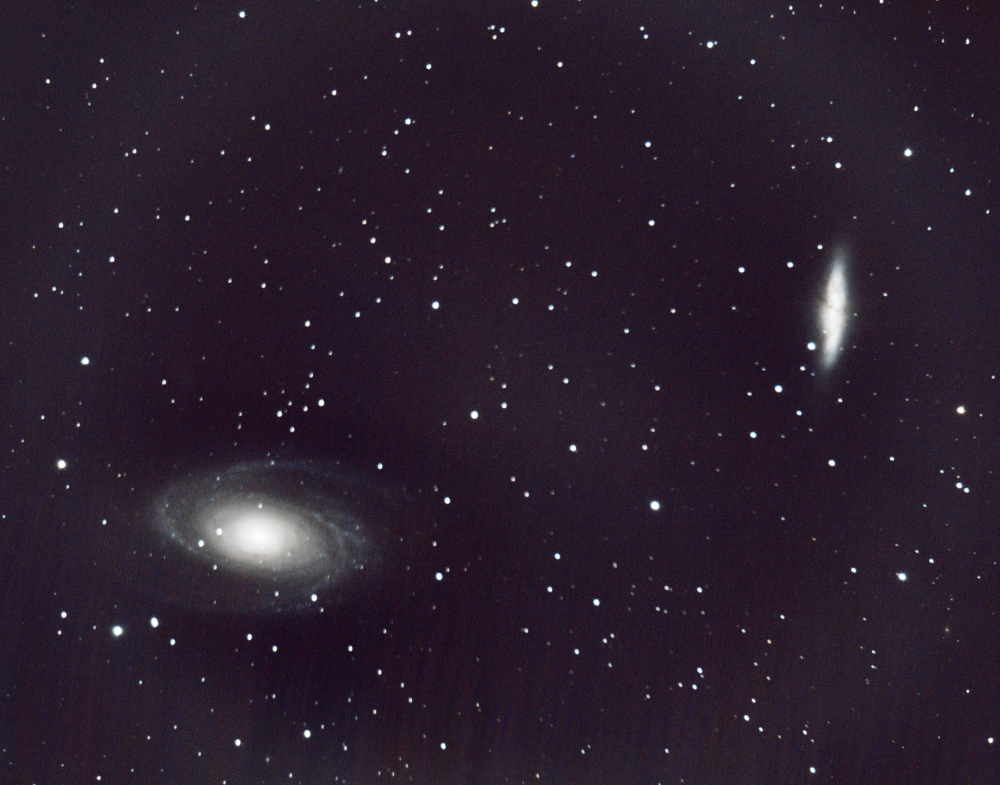
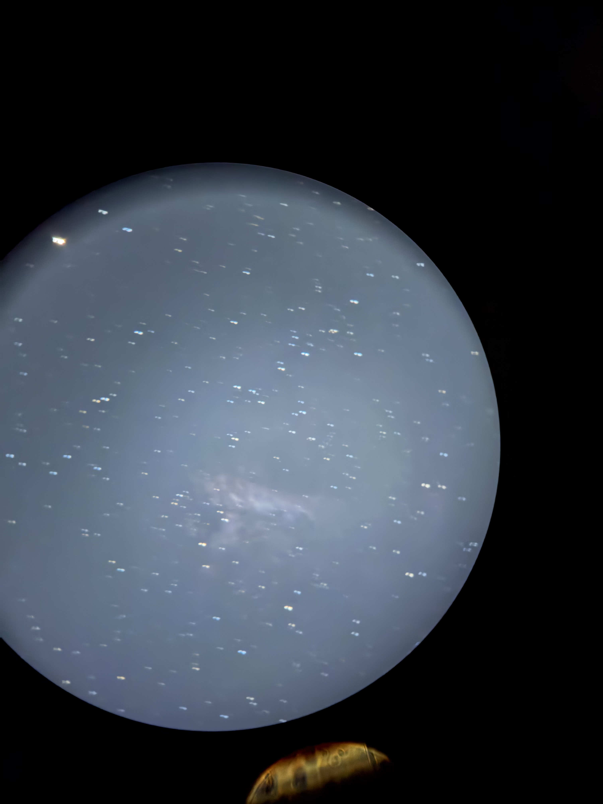

go back
my astrophotography
recently i kinda got into astronomy with a celestron nexstar 8se i've had for a bit and my iphone
my more recent shots have been using a canon dlsr instead of my phone
i haven't been doing it for long but i'm proud of some of the shots i've gotten and wanted to share them
i'll put more here after i get the images off my phone
bode's and cigar galaxy
EASILY my favorite shot
my most difficult to get as well
my second (and as of writing this, most recent) shot with my canon dlsr

whirlpool galaxy
not my first shot but definitely one of my favorite
first time i got spirals in a galaxy
which was HUGE for me cause its awesome
but its still not perfect

orion nebula
my first picture of a DSO
its not great since i haven't had a good opportunity to see orion again
but its still REALLLY COOL
even though it may be blurry

swan (omega?) nebula
my second ever nebula
pretty blurry, i should improve it later
i stil think it looks really cool
but its not very clear
